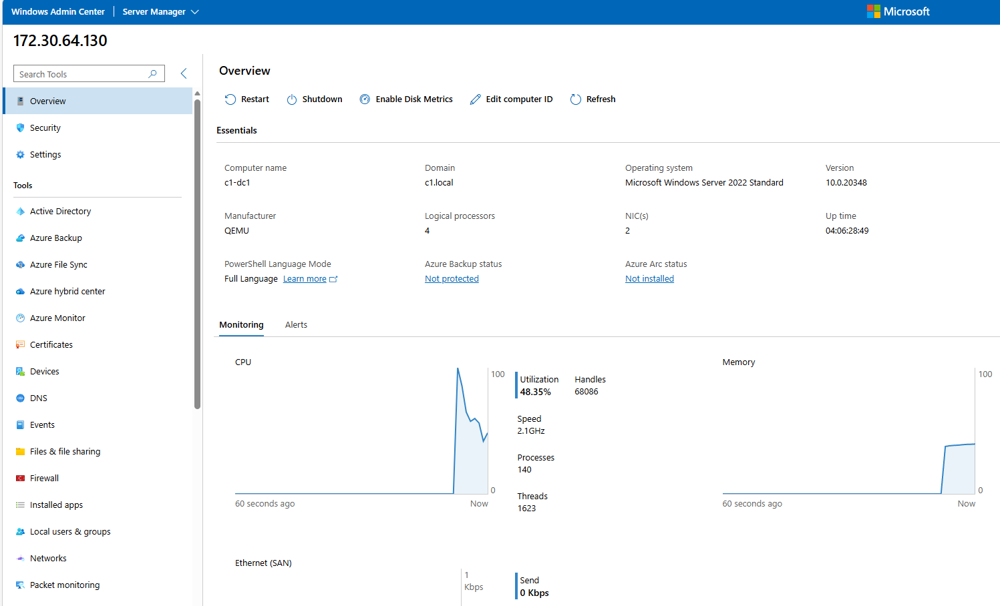

Systems and Infrastructure Portfolio | Ottawa, ON
Enterprise infrastructure delivery and support.
This portfolio highlights the primary infrastructure environment I independently designed, implemented, and documented within an enterprise capstone project. Scope included shared compute, tenant-separated services, segmentation, backup workflows, monitoring, and operational handover. A secondary environment appears only where it supports offsite protection, MSP access, and recovery design.
Featured Work
Enterprise infrastructure delivery, operations, and support in one project.
Primary Environment
Private-cloud infrastructure delivery
Independently designed, implemented, and documented the primary infrastructure environment within a broader enterprise capstone that also included MSP access, shared storage, and offsite protection workflows.
- Direct ownership of tenant, storage, DMZ, and management networks
- Shared compute hosted on Proxmox VE with segmented VLAN design
- Backup and offsite copy workflow routed through site-to-site OpenVPN
- Integrated handover package prepared for support transition
Operations and Validation
Supportable by design
Operational scope included approved administrative paths, backup continuity, validation cadence, fast triage, and end-user workflow checks so the environment could be handed over cleanly and supported consistently.
- Daily, weekly, monthly, and post-change checks
- Failure-domain and dependency thinking
- Bounded administrative and MSP access model
- Client access, permissions, backup, and offsite protection validation
Project Repository
Architecture, runbooks, and technical evidence
The linked GitHub project packages sanitized architecture notes, operating runbooks, triage guidance, screenshots, and supporting PowerShell artifacts into a public technical portfolio.
- Primary environment architecture and evidence gallery
- Daily, weekly, and post-change validation guidance
- Fast triage guide with likely fault domains
- PowerShell-backed validation and archive helpers
Architecture
Primary environment architecture
The public diagram shows management flow, segmentation, shared compute, monitoring, storage, and backup design in a sanitized format. Sensitive hostnames, credentials, and internal implementation details are intentionally excluded from the public view.
- Service names and traffic flows are simplified for public review
- Internal IPs, credentials, and VPN specifics remain private
- Focus stays on architecture, supportability, and recovery design

Evidence
Selected infrastructure and support evidence.

Shared compute on Proxmox VE
Capacity and utilization snapshot from the virtualization layer hosting the primary environment.

Operational visibility
Grafana view used to document host health and workload monitoring across the primary environment.

Backup and recovery readiness
Veeam job status used to show protected workloads and recovery-oriented checks in the primary environment.

Administrative access and server oversight
Windows Admin Center view used to manage core Windows services and review server health from an approved administrative path.
Support Documentation
Operational handover and validation package
Prepared structured handover documentation covering routine checks, approved administrative paths, backup validation, and fast-triage guidance so the environment could be supported consistently after build-out.
Core Stack
Core technologies used across the project
Infrastructure
Proxmox VE, Hyper-V, Windows Server 2019/2022, Ubuntu, Red Hat/CentOS, Alpine Linux
Networking
Cisco IOS, ArubaOS, VLANs, OSPF, STP, TCP/IP, DNS, DHCP, VPN, OPNsense/pfSense, NAT, DMZ
Operations
AD DS, GPO, Samba AD, iSCSI, Veeam Backup & Replication, Grafana, InfluxDB, Windows Admin Center, Cockpit
Support and Validation
PowerShell, Wireshark, Microsoft 365, technical handover documentation, operational checks, and failure-domain triage
Contact